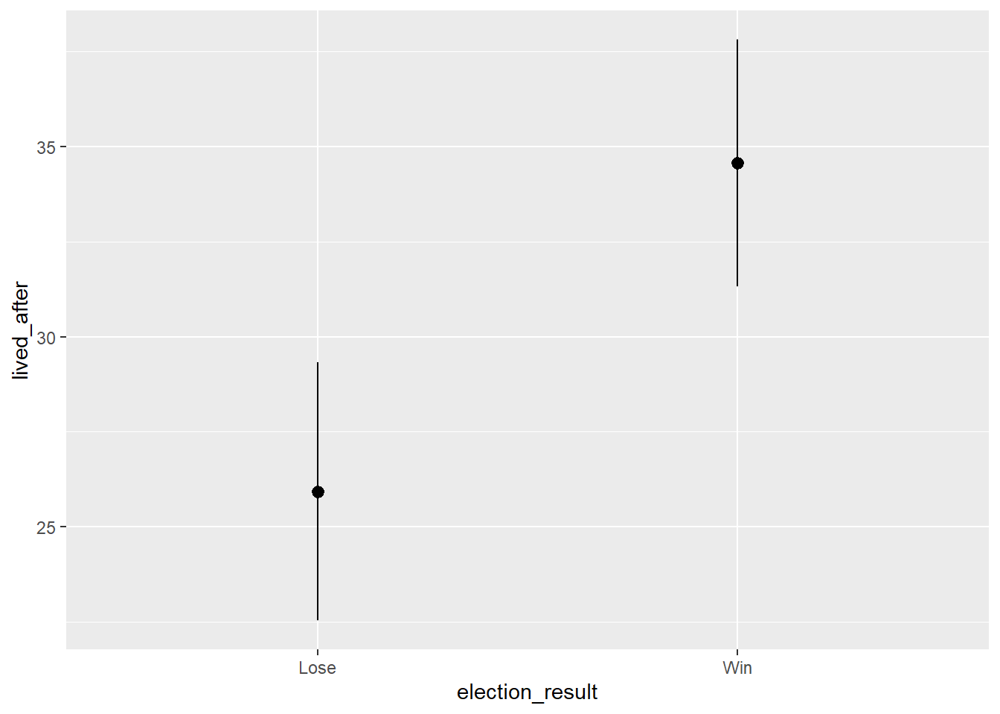
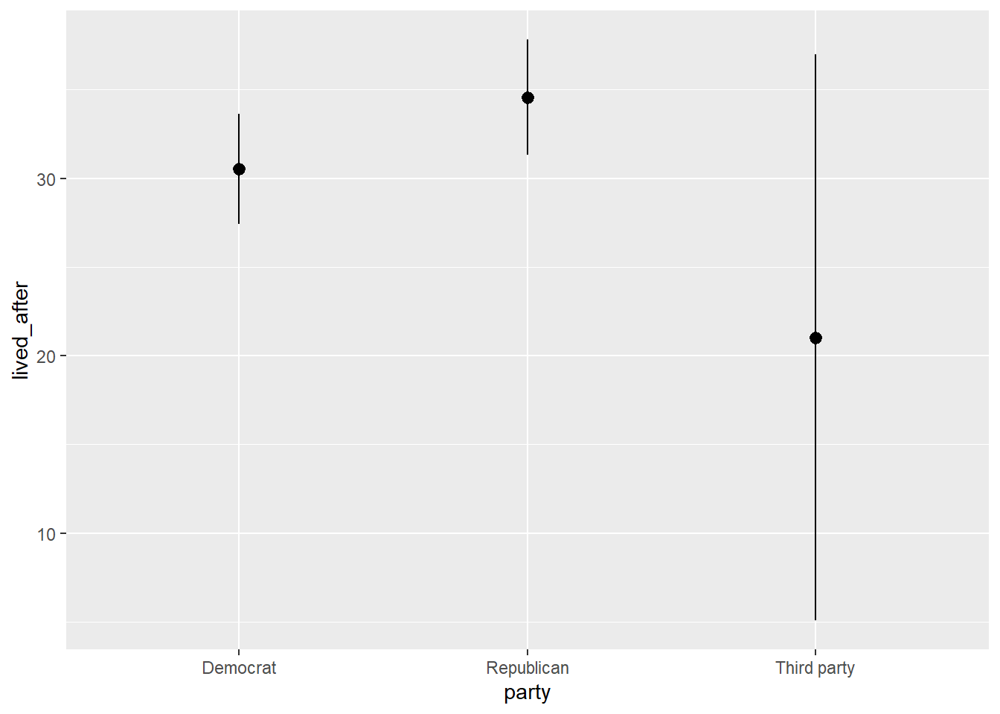
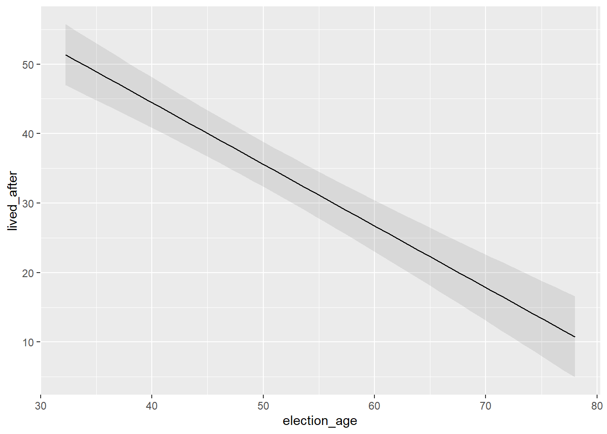
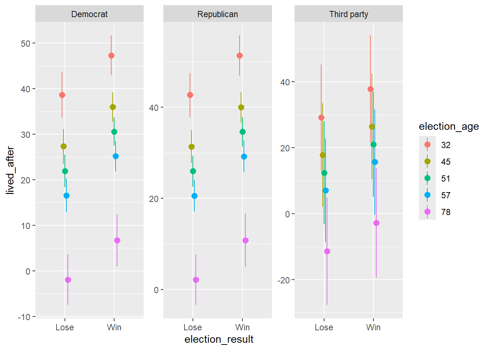
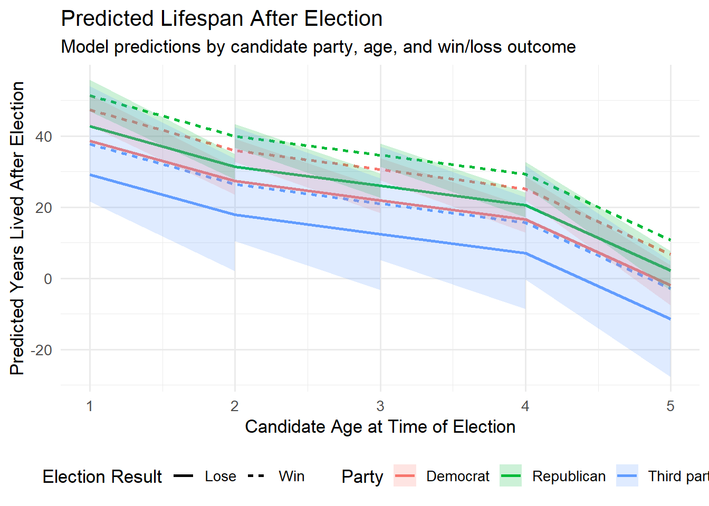

Warning: package 'purrr' was built under R version 4.5.1Warning: package 'gt' was built under R version 4.5.1Warning: package 'purrr' was built under R version 4.5.1Warning: package 'gt' was built under R version 4.5.1| Preceptor Table | ||||||||
|---|---|---|---|---|---|---|---|---|
| Candidate3 |
Potential Outcomes1,2
|
Treatment
|
Covariates
|
|||||
| Years Lived (Lose) | Years Lived (Win) | Election Result | Age | Win Margin | Party | Sex | Other4 | |
| Joe Smith | 18* | 23 | Win | 56 | 7.2 | Republican | Male | … |
| David Jones | 22 | 28* | Lose | 48 | -3.5 | Democrat | Male | … |
| … | … | … | … | … | … | … | … | … |
| 1 A * indicates a potential outcome that is not observed. | ||||||||
| 2 Years lived: Years lived after election, for both possible election results. | ||||||||
| 3 Each row is a candidate running for election in 2025. | ||||||||
| 4 Other = additional covariates not listed here. | ||||||||
| Population Table | ||||||||||
|---|---|---|---|---|---|---|---|---|---|---|
| Source |
Unit/Time
|
Potential Outcomes1,2
|
Treatment
|
Covariates3
|
||||||
| Candidate | Year | Years Lived (Lose) | Years Lived (Win) | Election Result | Win Margin | Age | Party | Sex | Other | |
| … | … | … | … | … | … | … | … | … | … | … |
| Data | Earl Warren | 1946 | 18* | 23 | Win | 7.2 | 56 | Republican | Male | … |
| Data | George Wallace | 1946 | 22 | 28* | Lose | -3.5 | 48 | Democrat | Male | … |
| Data | Nelson Rockefeller | 1946 | 14* | 17 | Win | 9.0 | 54 | Republican | Male | … |
| … | … | … | … | … | … | … | … | … | … | … |
| Preceptor Table | Joe Smith | 2025 | 18* | 23 | Win | 56 | 7.2 | Republican | Male | … |
| Preceptor Table | David Jones | 2025 | 22 | 28* | Lose | 48 | -3.5 | Democrat | Male | … |
| … | … | … | … | … | … | … | … | … | … | … |
| 1 A * indicates a potential outcome that is not observed. | ||||||||||
| 2 Years lived: Number of years lived after election for both possible outcomes. | ||||||||||
| 3 Other = additional covariates not listed here. Age is at election. | ||||||||||
tidy() to examine the confidence intervals of the parameters. Are they any changes we might consider making?# A tibble: 6 × 7
term estimate std.error statistic p.value conf.low conf.high
<chr> <dbl> <dbl> <dbl> <dbl> <dbl> <dbl>
1 (Intercept) 67.6 4.94 13.7 4.18e-32 57.8 77.3
2 election_resultWin 8.63 2.74 3.15 1.83e- 3 3.24 14.0
3 win_margin -1.46 0.505 -2.89 4.21e- 3 -2.46 -0.464
4 election_age -0.887 0.0875 -10.1 1.98e-20 -1.06 -0.715
5 partyRepublican 4.04 1.43 2.83 5.05e- 3 1.23 6.85
6 partyThird party -9.50 8.03 -1.18 2.38e- 1 -25.3 6.31 We can ignore partyThird party variable as its confidence intervals passes zero.
Warning: Since gt v0.3.0, `columns = vars(...)` has been deprecated.
• Please use `columns = c(...)` instead.| Model Parameter Estimates | ||||||
|---|---|---|---|---|---|---|
| Term | Estimate | Std. Error | t Statistic | p-value | 95% CI (Lower) | 95% CI (Upper) |
| (Intercept) | 67.56 | 4.94 | 13.68 | 4.18e-32 | 57.83 | 77.30 |
| election_resultWin | 8.63 | 2.74 | 3.15 | 1.83e-03 | 3.24 | 14.03 |
| win_margin | -1.46 | 0.51 | -2.89 | 4.21e-03 | -2.46 | -0.46 |
| election_age | -0.89 | 0.09 | -10.14 | 1.98e-20 | -1.06 | -0.71 |
| partyRepublican | 4.04 | 1.43 | 2.83 | 5.05e-03 | 1.23 | 6.85 |
| partyThird party | -9.50 | 8.03 | -1.18 | 2.38e-01 | -25.32 | 6.31 |
\[ \text{lived\_after}_i = 67.5647 + 8.6345 \cdot \text{election\_resultWin}_i - 1.4598 \cdot \text{win\_margin}_i - 0.8869 \cdot \text{election\_age}_i + 4.0386 \cdot \text{partyRepublican}_i - 9.5035 \cdot \text{partyThirdParty}_i + \varepsilon_i \]
Recall our original question: Do winning candidates live longer? Well, do they? And do other candidate characteristics matter?
plot_predictions()
Estimate Std. Error z Pr(>|z|) S 2.5 % 97.5 %
25.1 1.57 16.0 <0.001 188.4 22.0 28.2
23.2 1.53 15.1 <0.001 168.7 20.2 26.2
26.9 1.75 15.4 <0.001 175.4 23.5 30.4
39.5 1.84 21.4 <0.001 336.6 35.9 43.1
23.8 1.30 18.3 <0.001 245.0 21.2 26.4
--- 244 rows omitted. See ?print.marginaleffects ---
28.2 1.52 18.6 <0.001 253.1 25.3 31.2
30.8 1.28 24.1 <0.001 423.0 28.3 33.3
21.0 1.55 13.6 <0.001 137.6 18.0 24.1
20.4 1.48 13.8 <0.001 141.8 17.5 23.3
28.8 1.29 22.4 <0.001 365.5 26.3 31.3
Type: numeric
The plot demonstrates that winning candidates live longer.

Republicans live longer and data is scattered for Thirdparty.

Election age and lived after have a negative realtionship.

draw = FALSE option to plot_predictions() to pull out the raw data. Then, tell an AI about that tibble and ask for some nice ggplot code. Pay special attention to the subtitle. rowid estimate std.error statistic p.value s.value conf.low
1 1 38.679858 2.569024 15.0562474 3.141180e-51 167.7670261 33.6446642
2 2 42.718468 2.473119 17.2731137 7.498518e-67 219.6625768 37.8712437
3 3 29.176309 8.200491 3.5578732 3.738698e-04 11.3851766 13.1036406
4 4 27.337781 1.950854 14.0132359 1.293732e-44 145.7932972 23.5141770
5 5 31.376391 1.846968 16.9880546 1.006732e-64 212.5937189 27.7564005
6 6 17.834231 8.030089 2.2209257 2.635600e-02 5.2457249 2.0955455
7 7 21.950841 1.831874 11.9827238 4.377024e-33 107.4936769 18.3604336
8 8 25.989451 1.733061 14.9962659 7.766768e-51 166.4610185 22.5927126
9 9 12.447291 8.002857 1.5553560 1.198613e-01 3.0605619 -3.2380201
10 10 16.561472 1.862971 8.8898175 6.120934e-19 60.5028819 12.9101162
11 11 20.600082 1.777836 11.5871661 4.787100e-31 100.7206190 17.1155874
12 12 7.057922 8.010872 0.8810429 3.782946e-01 1.4024180 -8.6430987
13 13 -1.907344 2.855231 -0.6680173 5.041226e-01 0.9881535 -7.5034935
14 14 2.131266 2.826189 0.7541131 4.507813e-01 1.1495004 -3.4079625
15 15 -11.410893 8.300716 -1.3746879 1.692282e-01 2.5629579 -27.6799972
16 16 47.314349 2.219967 21.3130889 8.584105e-101 332.4130699 42.9632945
17 17 51.352959 2.244691 22.8775195 7.780139e-116 382.3838631 46.9534459
18 18 37.810800 8.284656 4.5639553 5.019876e-06 17.6039168 21.5731724
19 19 35.972272 1.638719 21.9514639 8.385729e-107 352.3783699 32.7604428
20 20 40.010882 1.698472 23.5569902 1.064472e-122 405.1850891 36.6819386
21 21 26.468722 8.149907 3.2477329 1.163284e-03 9.7475806 10.4951973
22 22 30.585332 1.580228 19.3550105 1.849569e-83 274.8328426 27.4881417
23 23 34.623942 1.654935 20.9216314 3.402728e-97 320.4603335 31.3803286
24 24 21.081782 8.139175 2.5901621 9.593075e-03 6.7037910 5.1292926
25 25 25.195963 1.695267 14.8625359 5.769903e-50 163.5678576 21.8733016
26 26 29.234573 1.777054 16.4511489 8.229227e-61 199.5968568 25.7516122
27 27 15.692414 8.163114 1.9223562 5.456095e-02 4.1959875 -0.3069964
28 28 6.727147 2.907430 2.3137776 2.067992e-02 5.5956253 1.0286885
29 29 10.765757 2.980286 3.6123241 3.034650e-04 11.6861824 4.9245049
30 30 -2.776402 8.500693 -0.3266089 7.439637e-01 0.4266959 -19.4374542
conf.high df lived_after win_margin election_result election_age
1 43.715053 Inf 28.47632 0.2006243 Lose 32
2 47.565693 Inf 28.47632 0.2006243 Lose 32
3 45.248976 Inf 28.47632 0.2006243 Lose 32
4 31.161385 Inf 28.47632 0.2006243 Lose 45
5 34.996381 Inf 28.47632 0.2006243 Lose 45
6 33.572917 Inf 28.47632 0.2006243 Lose 45
7 25.541248 Inf 28.47632 0.2006243 Lose 51
8 29.386189 Inf 28.47632 0.2006243 Lose 51
9 28.132602 Inf 28.47632 0.2006243 Lose 51
10 20.212828 Inf 28.47632 0.2006243 Lose 57
11 24.084577 Inf 28.47632 0.2006243 Lose 57
12 22.758944 Inf 28.47632 0.2006243 Lose 57
13 3.688806 Inf 28.47632 0.2006243 Lose 78
14 7.670495 Inf 28.47632 0.2006243 Lose 78
15 4.858210 Inf 28.47632 0.2006243 Lose 78
16 51.665404 Inf 28.47632 0.2006243 Win 32
17 55.752472 Inf 28.47632 0.2006243 Win 32
18 54.048427 Inf 28.47632 0.2006243 Win 32
19 39.184102 Inf 28.47632 0.2006243 Win 45
20 43.339825 Inf 28.47632 0.2006243 Win 45
21 42.442247 Inf 28.47632 0.2006243 Win 45
22 33.682522 Inf 28.47632 0.2006243 Win 51
23 37.867555 Inf 28.47632 0.2006243 Win 51
24 37.034272 Inf 28.47632 0.2006243 Win 51
25 28.518625 Inf 28.47632 0.2006243 Win 57
26 32.717534 Inf 28.47632 0.2006243 Win 57
27 31.691823 Inf 28.47632 0.2006243 Win 57
28 12.425606 Inf 28.47632 0.2006243 Win 78
29 16.607010 Inf 28.47632 0.2006243 Win 78
30 13.884650 Inf 28.47632 0.2006243 Win 78
party
1 Democrat
2 Republican
3 Third party
4 Democrat
5 Republican
6 Third party
7 Democrat
8 Republican
9 Third party
10 Democrat
11 Republican
12 Third party
13 Democrat
14 Republican
15 Third party
16 Democrat
17 Republican
18 Third party
19 Democrat
20 Republican
21 Third party
22 Democrat
23 Republican
24 Third party
25 Democrat
26 Republican
27 Third party
28 Democrat
29 Republican
30 Third partyWarning: Using `size` aesthetic for lines was deprecated in ggplot2 3.4.0.
ℹ Please use `linewidth` instead.
Republicans live longer and younger ages like 32 years are wining the elction.